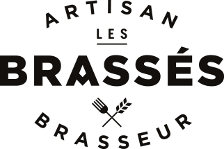

Comme je vous l'ai dit dans mon article Présentation, j'ai travaillé
pendant 19 ans en restauration avant de me décider à changer de voie. Je savais pertinemment que je voulais être dans le domaine de l'informatique, mais c'était, pour moi à l'époque, complètement inaccessible pour un type doté
d'un BEP en hôtellerie. Lorsque ma femme avait voulu se réorienter en sortant de la fac, quelques années plus tôt, elle s'était rendu au CIO de notre ville et
y avait effectué des tests pour l'aider dans son orientation. Ceux-ci avaient été très pertinents. J'ai donc fait la même démarche et je vous laisse deviner le résultat des tests. Le personnel du
CIO m'a ensuite conseillé de me tourner vers le Fongecif pour avoir de plus amples informations sur les
démarches à engager pour cette reconversion.
Ouvrons une parenthèse, à ce moment là, je travaillais encore en restauration, aux Brassés, soit dit en passant, le meilleur
bar restaurant de Nantes, à mon goût, pour déguster une excellente bière artisanale élaborée sur place, accompagnée d'une côte de boeuf d'un autre monde, cuite au charbon de bois. N'hésitez pas à vous laisser tenter si vous êtes
de passage à Nantes et fermons ici cette parenthèse.

J'ai donc participé à une réunion d'information au Fongecif et en suis sorti avec un dossier
de financement pour bilan de compétences. À cet instant, il était clair pour moi de me faire accompagner un maximum pour réussir ma reconversion. Quelques temps après, mes patrons m'accordaient une rupture conventionnelle afin
de me consacrer entièrement à mon futur bilan de compétences. J'ai donc démarché une poignet de centres spécialisés à cet effet et mon conseil à ce sujet, sera de ne pas vous embarquer avec le premier contacté.
Je m'explique...
Beaucoup de centres vous parlerons avant toute chose du financement sans pour autant se rensigner sur votre projet, envie ou état d'esprit. Il vous faut impérativement tomber sur une personne avec qui le courant passe bien
car c'est une personne que vous allez côtoyer régulièrement sur plusieurs mois et il est essentiel que vous vous sentiez bien pour parler, avec cette personne, sans artifice et librement.
Pour ma part, après quelques RDV infructueux, je me suis présenté, après un premier entretien téléphonique, chez
Dynam IRH où j'ai rencontré l'excellent Frédéric
BERNIER, ancien agriculteur qui, après 2 bilans de compétences ponctués d'un retour sur les bancs de la fac, s'est décidé à ouvrir son propre centre de bilans de compétences.
Ce fut une formidable expérience, pleine de découvertes sur ma personnalité mais aussi de doutes sur l'issue de cette volonté de me reconvertir, car en
me renseignant sur certaines écoles d'informatiques de la région nantaise, lors de mes enquêtes métiers, beaucoup acceptaient seulement à partir du BAC, que je n'avais pas. Vous devinerez mon soulagement, en rencontrant l'IMIE, lors d'un salon autour de l'emploi, qui m'a tout de suite rassuré sur le niveau de diplôme
requis. J'ai dû ensuite monter un dossier auprès de Pôle Emploi pour savoir si un financement de formation était possible.
Je suis allé visiter le campus de l'IMIE lors des journées portes ouvertes, 15 jours après le salon. La présentation avec l'encadrement et les formateurs m'a décidé à postuler. Après des tests de logique et culture générale ainsi qu'un entretien sur le campus, j'ai été
accepté pour intégrer la formation IT BOOST, dédiée au développement informatique. Dans la foulée, mon dossier de financement a été accepté par Pôle Emploi. En attendant la rentrée prévue 3 mois plus tard, j'ai commencé à me former
à certains langages sur le site
Openclassrooms ce qui m'a permis de commencer l'élaboration de ce site.
J'ai commencé ma première année à l'IMIE en février 2018 et je commence ma troisième année dans quelques jours.
Je suis en contrat de professionnalisation chez
Gest'innov depuis octobre 2018.
J'espère que ces quelques lignes vous auront un peu éclairé sur les différentes étapes d'une reconversion. N'hésitez pas à me
contacter
ici si vous voulez plus de précisions. Je vous dis à bientôt pour un nouvel article.

Reconversion professionnelle
Lundi 16 septembre 2019